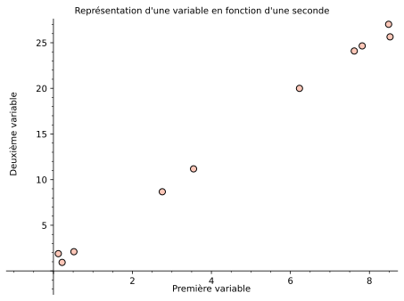
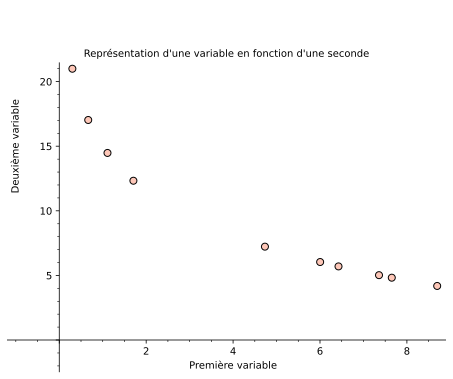
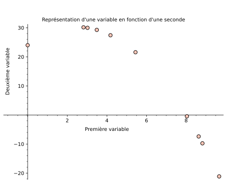
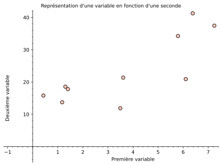

Déterminer visuellement si la nature du lien entre deux variables est linéaire
Introduire le calcul de la droite de régression
Préparer le fichier de base de données pour le laboratoire
1.
Parmi les images suivantes, déterminer celle ou celles qui ont le plus l’allure d’un lien linéaire.
Figure8.1.1.Un premier lien entre deux variables
Figure8.1.2.Un deuxième lien entre deux variables
Figure8.1.3.Un troisième lien entre deux variables
Figure8.1.4.Un quatrième lien entre deux variables
2.
Par deux points il ne peut passer qu’une seule droite. Étant donnés un ensemble de points, il est impossible de penser qu’une relation de la forme \(y=ax+b\) pourra passer par tous les points. Il existe plusieurs manières de définir « la meilleure droite » \(y=ax+b\) représentant un ensemble de points. La plus commune est celle obtenue en appliquant la méthode des moindres carrées.
Cette méthode consiste à calculer la différence entre chacune des valeurs dépendantes des données et la valeur dépendante de l’équation d’une droite de paramètres \(a,b\) et d’additionner le carré de toutes ces différences. On cherche les valeurs de \(a\) et \(b\) qui minimise cette somme.
(a)
On considère les points \(A(1;1),B(2;3)\) et \(C(4;4)\text{.}\) Écrire les trois termes de la sommes des moindres carrés pour ces trois points.
(b)
Dans un cours de calcul différentiel à plusieurs variables, on apprend que pour optimiser une fonction multivariée, il faut que les dérivées par rapport à chacune de ses variables soit égales à \(0\text{.}\) Dans le cas des moindres carrés, deux variables sont présentes. En traitant à tour de rôle l’une variable comme étant constante, calculer la dérivée de la somme obtenue à la partie précédente par rapport à l’autre variable pour obtenir deux équations linéaires en \(a,b\text{.}\)
(c)
En posant chacune de ces équations égales à 0, montrer que la droite des moindres carrés de ce problème est
Le fichier 13jeux_de_donnees.xlsx disponible TODO contient 13 ensembles de couples de données ayant été créés artificiellement afin de produire le résultat des exercices ci-dessous. Le but de cet exercice est de comprendre l’importance d’observer les données avant d’en tirer quelconques conclusion.
(a)
Dans une nouvelle feuille de calculs, créer un tableau croisé dynamique contenant dans le champ «colonne» les entréesValeurs_X et Valeurs_Y. Ajouter aussi un filtre avec l’entrée Jeu x
(b)
Positionner le filtre en haut du tableau sur Jeu 1.
(c)
À l’aide de fonctions Excel, calculer la moyenne des valeurs X, la moyenne des valeurs Y, l’écart type des valeurs X, l’écart type des valeurs Y ainsi que le coefficient de corrélation entre les valeurs X et Y.
(d)
Insérer un nuage de points avec les valeurs du tableau croisé dynamique.
(e)
Observer l’effet qu’a le changement du jeu de données dans le filtre sur les mesures statistiques calculées et sur l’allure du nuage de points. Commenter brièvement.
4.
Télécharger le fichier Cepheides_donnees.xlsx disponible TODO. Ce fichier contient différentes données de \(421\) étoiles de type « céphéides ». Dans le prochain laboratoire, on cherche à déterminer s’il existe des liens linéaires entre certaines de ces variables.
(a)
Dans une feuille appelée « PR », tracer le nuage de points représentant le rayon des étoiles en fonction de leur période de pulsation. Effectuer la mise en forme appropriée.
(b)
Dans une feuille appelée «MappP », tracer le nuage de points représentant la magnitude apparente des étoiles en fonction de leur période de pulsation. Effectuer la mise en forme appropriée.
(c)
Dans une feuille appelée «MabsP », tracer le nuage de points représentant la magnitude absolue des étoiles en fonction de leur période de pulsation. Effectuer la mise en forme appropriée.
(d)
Sur chacune des trois feuille, faire l’étude descriptive de la population telle que décrite dans la Sous-sous-section 3.2.1.6 pour les variables impliquées.